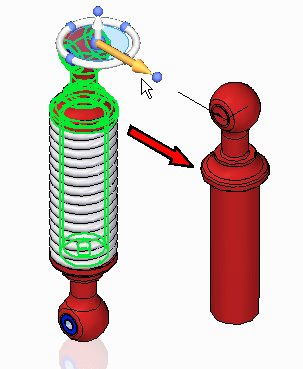

Steering Wheel Move command (Assembly environment)
Steering Wheel Move command (Assembly environment)
In assembly, the steering wheel can be used to move or copy components.

Components selected in an assembly can be moved or copied using the steering wheel.
When a component is moved a choice is provided to either delete or suppress the original relationships that were used to position the component.
The following options are available to position the component in the new location:
-
Do not repair unsatisfied relationships.
Note:Component is moved and only valid relationships are preserved. Other relationships are suppressed or deleted. Suppressed relationships are displayed in the lower pane of assembly PathFinder.
-
Repair unsatisfied relationships. Options available where possible:
-
Adjust offset values and then replace relationships to other components.
-
Adjust relationship offset values only.
-
Replace relationships to other components only.
Note:When attempting to apply relationships to other components, the components need to be selected. There will never be more relationships created than what existed on the component before the operation. Valid relationships for this operation are Mate, Planar Align, Axial Align, Connect and Tangent relationships.
-
-
Remove all external relationships and add new relationships to other components.
The select related faces button finds faces which have assembly relationships with the selection. Only synchronous geometry is valid for related face selection. These faces are added to the selection, and the Design Intent panel controls the behavior of the face manipulations when faces are selected. Select related faces is disabled when using the copy option.
The move subassembly components button allows the selection of individual components within a subassembly.
When a part within a subassembly is moved, the subassembly is altered and the change exists in all other assemblies where the subassembly has been placed.
How do I
Steering Wheel Move in an assemblyLook up more details
Steering Wheel Move (Assembly environment)Move command bar (Assembly environment)